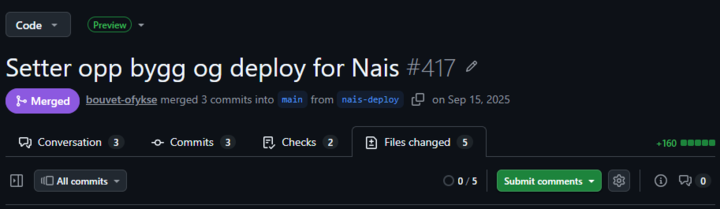
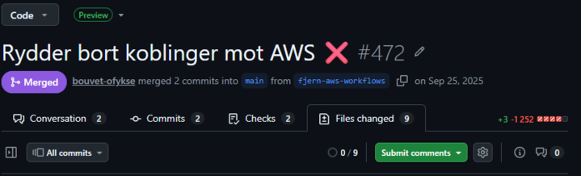

Hva er NAIS
NAIS er en opinionated PaaS bygget oppå Kubernetes.
Bygget av NAV
Den gir deg en standardisert måte å bygge, deploye og kjøre applikasjoner på – uten at hvert team må løse alle plattformproblemene selv.
Bouvet One 26.03.2026
Rasmus Lyngaas
Olav Fykse
NAIS er en opinionated PaaS bygget oppå Kubernetes.
Bygget av NAV
Den gir deg en standardisert måte å bygge, deploye og kjøre applikasjoner på – uten at hvert team må løse alle plattformproblemene selv.
En plattform som har tatt valg for deg
Du skal ikke måtte kunne Kubernetes
Sikkerhet skal være default riktig
Standardisering > fleksibilitet
apiVersion: nais.io/v1alpha1
kind: Application
spec:
image: my-api:1.0.0
port: 8080
replicas:
min: 2
max: 5
accessPolicy:
inbound:
- application: web
prometheus:
enabled: true
gcp:
sqlInstances:
- name: db
apiVersion: nais.io/v1alpha1
kind: Application
spec:
image: my-api:1.0.0
port: 8080
replicas:
min: 2
max: 5
accessPolicy:
inbound:
- application: web
prometheus:
enabled: true
gcp:
sqlInstances:
- name: db

